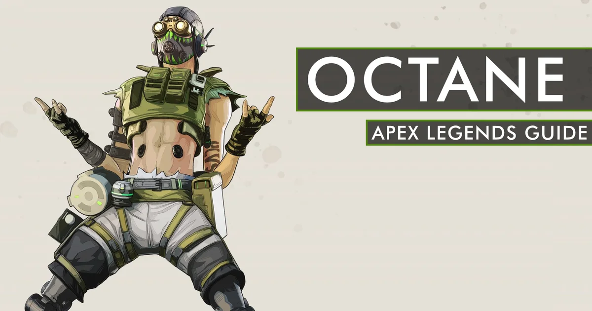
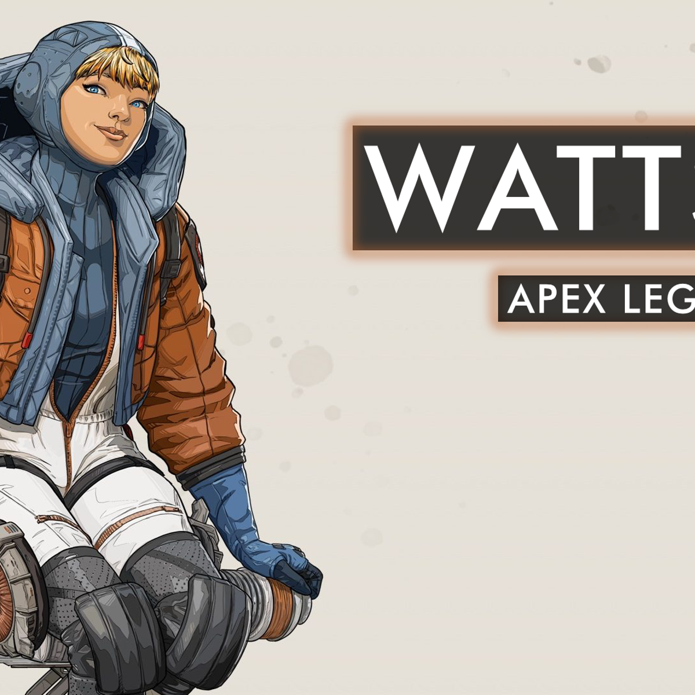
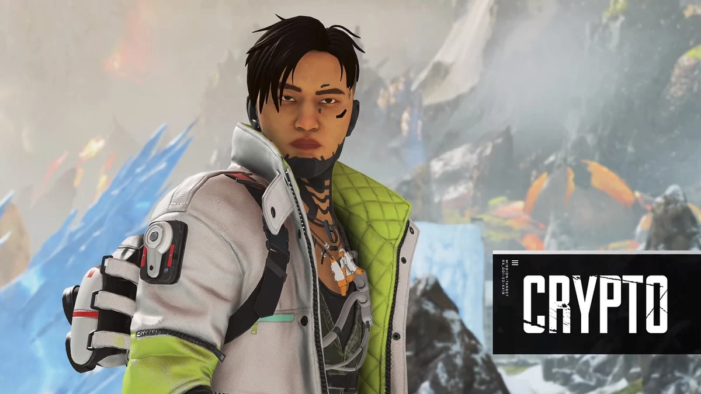
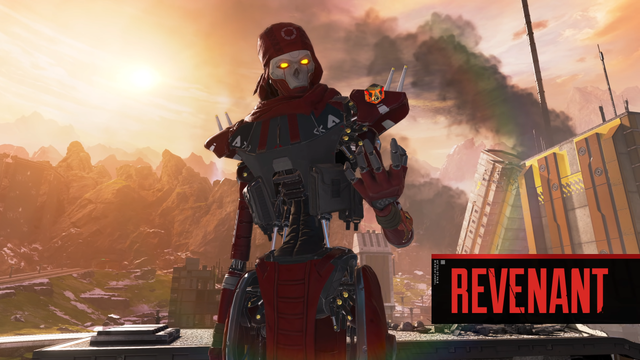

Perhaps the best thing that sets Caustic apart from other Legends in Apex Legends gameplay would be his primary playstyle: his Gas Traps. Thanks to the deployable nature of these trinkets, Caustic is able to transform even the most mundane of locations into death traps, especially once Caustic and his team finish enemies off with Apex Legends Assault Rifles and other powerful guns. Players who want to get some insights into what Caustic can offer might want to check out these abilities.

Class - Skrimisher
Players who prefer to go wild with high risk, high reward strategies will definitely feel a rush of adrenaline with Octane’s hyper-aggressive kit. After all, he’s the only Legend with the capabilities of outpacing everyone else in the game, encouraging high-speed gameplay. However, despite Octane’s penchant to cause chaos regardless of his choice of weapons like Apex Legends SMGs, it would do good for players who plan on using him to have a more concrete grasp of what his toolkit can offer them. Here is an overview of Octane’s core skills and how they factor into general gameplay:
-
Swift Ment (Passive) - Octane starts recovering Health after not taking damage for quite some time.
- Stim (Tactical) - When activated, Octane gets increased speed at the cost of a bit of help. This also reduces slow effects.
- Launch Pad (Ultimate) - Octane whips out a Launch Pad and throws it to his general direction, allowing any player using it to be thrown to whatever direction the pad is facing.
Octane Abiltiy Showcase and Tips

Class - Controller
Given Wattson’s area-securing toolkit, her skillset isn’t an immediate choice for offensive-leaning players in any Apex Legends map. However, players who love powerful weapons like Machine Guns enjoy sticking behind Wattson’s defensive perimeter and picking off enemies who try to invade their space. Players who appreciate this kind of defensive playstyle should check out Wattson’s toolkit.
-
Spark Of Genius (Passive) - Wattson has passive Shield regeneration, an extra Ultimate Accelerant slot, and Ultimate recharge from a single Accelerant.
- Perimeter Security (Tactical) - Wattson can release nodes that connect to electric fences, damaging opponents and slowing them when passed through.
- Interception Pylon (Ultimate): Wattson releases a device that disables gadgets and deployables, as well as providing constant Shield regeneration to Wattson and her allies.
Wattson Abiltiy Showcase and Tips

Class - Recon
Crypto is one of the few Apex Legends characters who is constantly accompanied by a Drone. However, unlike more fast-paced counterparts such as Lifeline and Horizon, Crypto’s usage of his Drone is the hallmark of his rather extremely careful - and sometimes slow - gameplay. This makes it ideal for him to use an Apex Legends Assault Rifle or a quick-firing weapon to help him with sudden engagements. However, players who get to master Crypto get access to one of the most potent surveillance Legends out there, thanks to these abilities:
-
Neurolink (Passive) - Whenever Crypto releases his Drone for surveillance, everything the Drone marks for up to 30 meters is also detected by his teammates.
- Surveillance Drone (Tactical) - The piece de resistance of Crypto’s kit, he can launch his Drone to explore up to a certain distance. Aside from being able to mark enemies and other useful items, the Drone can use Survey Beacons and Respawn Beacons remotely.
- Drone EMP (Ultimate) - Perhaps Crypto’s most devastating offering, Crypto can load and launch an EMP blast from his drone. Not only does this slow down players and destroy traps, but this also deals 50 Shield damage.
Crypto Abiltiy Showcase and Tips

Class - Assault
As players begin to learn and master the newly released character there will certainly be a plentiful amount of defeats and deaths. The character's kit is relatively complex and is one that, if not mastered, can lead to some embarrassing and frustrating losses. However, there is no better time to learn a new character than now and even the most frustrating losses can serve as a learning tool for players learning a new character. When picking up Revenant it is important that aspiring players understand his relative strengths and weaknesses. He is a very technical legend and is one that will require a firm understanding of game mechanics to excel with. This guide will provide aspiring players a foundation to build upon as they master the newly released assassin.
-
Stalker (Passive) - You crouch-walk faster and can climb higher than other Legends.
- Silence (Tactical) - Throw a device that deals damage and disables enemy abilities.
- Death Totem
(Ultimate) - Drop a totem that protects those who use it from death for a set amount of time. Instead of being killed or downed, users will return to the totem.
Revenant Abiltiy Showcase and Tips
Class - Support
Given how Apex Legends weapons aren’t immediately available in a gameplay session, players who plan on using Loba might get very attracted with her item-acquisition skillset. However, her toolkit does exclusively focus on detecting and acquiring items, meaning Loba has a distinct lack of combat skills that make her unideal for extremely aggressive players toting Apex Legends SMGs. Gamers who want to use the battle royale’s resident thief need to consider the following skills to maximize her toolkit:
-
Eye For Quality (Passive) - As a thief, Loba has an impeccable ability to determine the quality of the goods she sees. In the game, this allows her to ping objects inside containers.
-
Burglar’s Best Friend (Tactical) - Loba throws her bracelet and teleports where it lands or upon command, provided the button is pressed again while it travels in the arc.
- Black Market Boutique (Ultimate) - Loba activates her staff and reveals a market, allowing anyone to acquire loot from various containers in the vicinity.
Loba Abiltiy Showcase and Tips